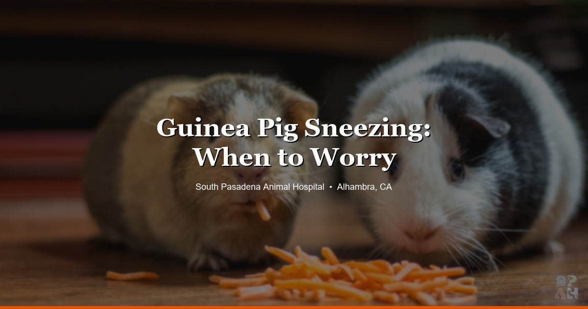

March 31, 2026 · 7 min read
Guinea Pig Sneezing: When to Worry and When It's Normal

If you're Googling "guinea pig sneezing" at 11pm, you're probably trying to figure out if you need to panic or not. Short answer: probably not — but it depends on what else is going on.
Guinea pigs sneeze. They just do. A little "achoo" from hay dust or a strong smell is totally normal. But when the sneezing gets frequent — or you start noticing discharge, weird breathing, or your pig not eating — that's a different story. Upper respiratory infections in guinea pigs can go south fast, and we see enough of them at SPAH to know that waiting too long usually makes things harder.
Normal Sneezing (Don't Worry About This)
Guinea pigs have sensitive little noses. They'll sneeze from:
- Dusty hay or bedding — timothy hay can be surprisingly dusty depending on the brand
- Cleaning products or strong scents — candles, air fresheners, perfume. They're more sensitive to this stuff than you'd think.
- Dry air from AC or heaters — pretty common in Southern California homes that run the AC a lot
- Random irritants — same as us sneezing for no reason
If your guinea pig sneezes a few times, eats normally, and is still wheek-ing at you when you open the fridge? They're fine. Don't stress it.
When It's More Than Just a Sneeze
Here's what actually concerns us. If the sneezing comes with any of these, it's time to call:
- Sneezing constantly — like multiple times an hour, not just once in a while
- Discharge from the nose — starts clear, might turn thick or yellow-green
- Crusty or watery eyes
- Noisy breathing — clicking, crackling, or wheezing sounds. If you can hear them breathing from across the room, that's not okay.
- Not eating — this one is always a red flag in guinea pigs
- Hiding more, not greeting you — a guinea pig that doesn't wheek for food is a guinea pig that doesn't feel well
- Hunched up or puffed out posture
Any combination of these and we'd want to see them. URIs in guinea pigs can turn into pneumonia within days — it moves faster than most owners expect.
What Actually Causes URIs in Guinea Pigs
Most of the time it's bacterial. Bordetella bronchiseptica and Streptococcus pneumoniae are the usual culprits. But there are a few things that make guinea pigs more likely to get sick in the first place:
- Poor cage ventilation — a lot of people use aquarium-style tanks thinking they're protecting their pig, but the airflow is terrible
- Cold or drafty rooms — anything below 65°F is too cold for them
- Stress from overcrowding, a new cage mate, or a big change in environment
- Not enough vitamin C — guinea pigs can't make their own (like humans), and a deficiency tanks their immune system. This is something we ask about at almost every guinea pig visit.
- Living with rabbits — Bordetella can jump from rabbits to guinea pigs. We always recommend housing them separately.
Can a URI Actually Kill a Guinea Pig?
Yes. And it happens more often than people think. Guinea pigs are prey animals, which means they instinctively hide when they're sick. By the time an owner notices something is clearly wrong, the infection has often been building for a while already.
We've had owners bring in guinea pigs thinking it was just a little cold, and on exam the lungs already sound rough. That's not to scare you — it's just why we always say come in sooner rather than later with respiratory stuff. A few days of the right antibiotics early on can save you a lot of worry.
How We Diagnose and Treat It
When you bring in a sneezy guinea pig, here's what we'll typically do:
- Listen to the lungs — a stethoscope tells us a lot about whether infection has reached the lower airways
- Check weight and discharge — weight loss is a big indicator of how long something's been going on
- Culture testing if the infection is severe or keeps coming back — so we know exactly which bacteria we're dealing with
Treatment is usually antibiotics, sometimes anti-inflammatories for comfort, and in worse cases nebulization or syringe feeding if they've stopped eating.
One thing we always want to emphasize: not all antibiotics are safe for guinea pigs. Some that are perfectly fine for dogs and cats can be fatal to guinea pigs — they destroy the gut flora these guys depend on. Never give your guinea pig leftover meds from another pet. This is a case where seeing a vet who regularly treats guinea pigs actually matters. At SPAH, we see guinea pigs all the time and know which medications are safe.
Keeping Their Lungs Healthy
Most of prevention comes down to their living environment:
- Dust-free bedding — paper-based (like Carefresh) is what we recommend. Cedar and pine shavings have oils that irritate the respiratory tract. We see this one a lot.
- Clean cage — spot clean daily, full bedding swap weekly. Ammonia buildup from urine is a real irritant.
- Good airflow — but no direct drafts. Open-top C&C cages tend to work well for this.
- Room temp between 65–75°F — in SoCal, the bigger risk is usually AC making the room too cold rather than the weather itself
- Daily vitamin C — bell peppers are probably the easiest source. A few slices a day does it. Those vitamin C drops for the water bottle? They break down within hours. We don't recommend relying on those.
- Quarantine new guinea pigs for 2–3 weeks before putting them with your existing pigs
- Don't house guinea pigs with rabbits — Bordetella transmission risk
- Annual wellness exams — lets us catch things early and make sure their weight is tracking right
When to Actually Come In
Here's our honest guide:
- Just sneezing, acting normal, eating fine? Monitor for a day or two. Check bedding, hay dust, and nearby scents.
- Sneezing plus discharge, noisy breathing, or appetite changes? Come in. Don't wait on this.
- Haven't eaten in 12+ hours? This is urgent. Guinea pigs need to eat constantly — when the gut slows down, that's its own problem on top of whatever else is going on.
- Losing weight fast or completely withdrawn? Same — come in as soon as you can.
Check our pricing page so you know what to expect cost-wise before the visit.
A sneeze here and there is just guinea pig life. But when it comes with other symptoms — or when your gut tells you something's off — trust that instinct. We'd always rather see a guinea pig early and say "they're fine" than see one late and have to play catch-up. We see guinea pigs and other small mammals at our Alhambra clinic and we're here if you need us.